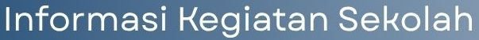
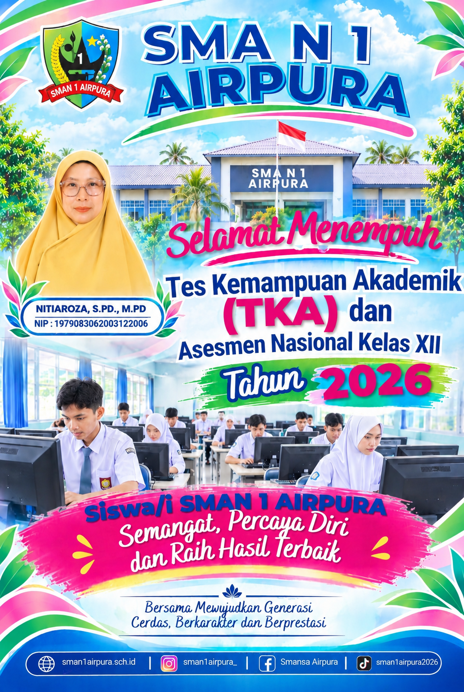

|
|
Profil Sekolah | GTK | Prestasi | Kegiatan | Informasi |

Bulan Oktober 2026
| 1) MBG (Makan Bergizi Gratis), setiap hari Senin s/d Jum'at | ||
| 2) Hari Guru Nasional (HGN), Rabu, 25 November 2026 | ||
| 3) Bantuan Beasiswa Baznas untuk siswa kurang mampu sebanyak 23 orang, klik disini | ||
| 4) Tes Kemampuan Akademik (TKA), Senin-Kamis, 2 - 5 November 2026 | ||
| 5) Wirid Remaja, Sabtu 14 dan 28 November 2026 | ||
|
 |